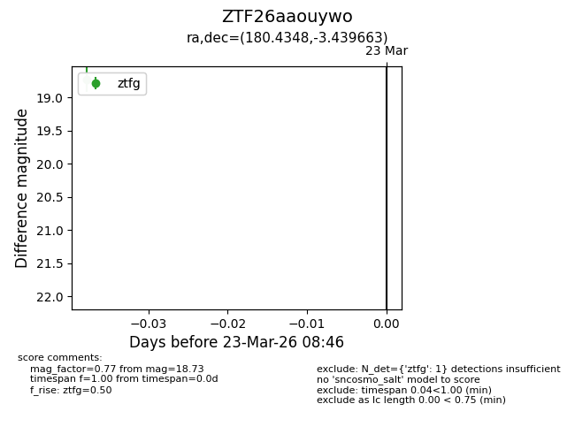
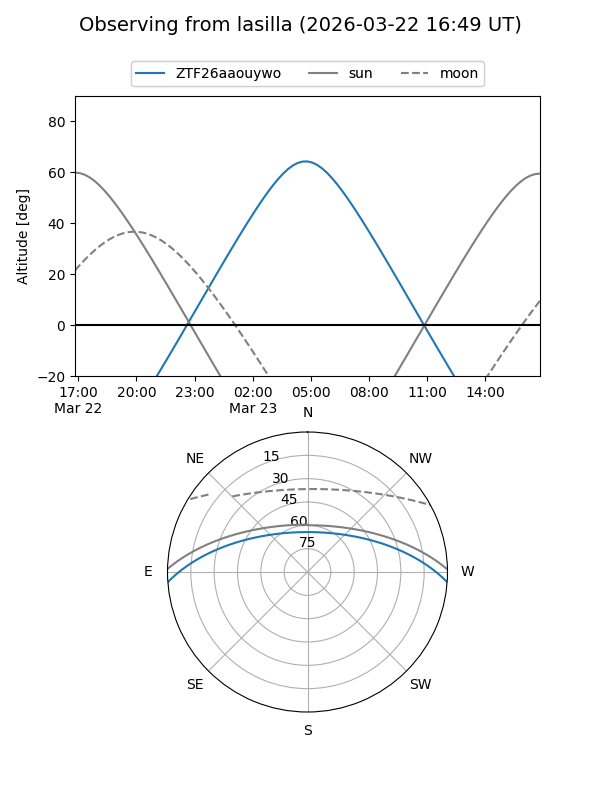
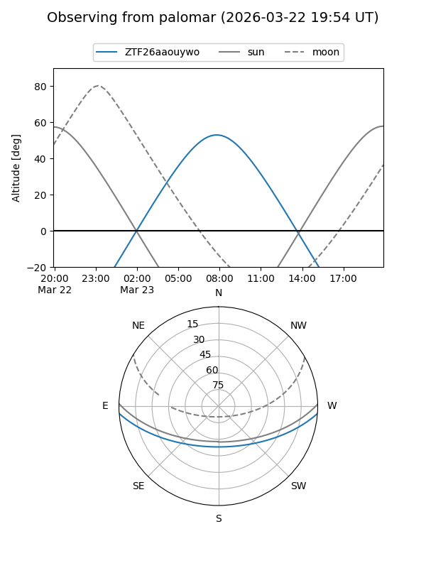

ZTF26aaouywo
Target ZTF26aaouywo at 2026-03-23 08:48
Aliases and brokers:
FINK: link
Lasair: link
ALeRCE: link
alt names
ZTF26aaouywo (ztf,fink_ztf)
Coordinates:
equatorial (ra, dec) = 180.4348,-3.43966
equatorial (HMS+DMS) = 12:01:44.34,-03:26:22.79
galactic (l, b) = (279.5990,+57.16342)
Flags:
Photometry:
last ztfg=18.73
1 ztfg detections
Lightcurve

Visibility


Additional plots